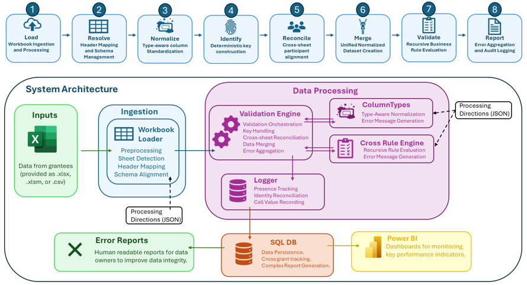

OWS Validation Engine¶
Schema-driven validation framework for workforce-program reporting systems.
The OWS Validation Engine ingests highly variable Excel workbooks submitted by external organizations, normalizes their contents into standardized structures, evaluates cross-sheet logical dependencies, and optionally persists longitudinal audit data into SQLite-backed tracking systems.
The framework is designed for environments where workbook formats, headers, data quality, and reporting practices vary substantially across providers.
The framework was originally developed to automate a largely manual workbook aggregation and validation process that had become a major operational bottleneck in workforce-program grant reporting.
External providers submitted heterogeneous Excel workbooks with varying structures, inconsistent headers, differing validation practices, and frequent formatting irregularities. Manual reconciliation and validation required substantial staff time and made longitudinal reporting difficult to scale reliably across reporting periods.
The validation engine was designed to standardize ingestion, automate cross-workbook validation, support participant-level reconciliation, and produce reproducible audit outputs suitable for large-scale reporting workflows.
{kind=link}

Core Capabilities¶
Resilient Workbook Ingestion
Handles hidden sheets, inconsistent headers, malformed exports, workbook-format variation, and transient file-access issues.
Schema-Driven Normalization
Applies reusable type-aware validators for dates, categorical fields, identifiers, wage fields, ZIP codes, and workforce-specific code systems.
Deterministic Participant Resolution
Uses configurable composite-key generation to support longitudinal participant tracking across reporting periods and datasets.
Recursive Cross-Sheet Validation
Evaluates declarative logical rule trees spanning multiple sheets, columns, and conditional relationships.
Structured Audit Logging
Optionally persists normalized values, validation violations, participant presence, and run metadata into SQLite.
The engine is configuration-driven and supports multiple program types through reusable workbook definitions, validation metadata, and rule configurations.
Core Components¶
Component |
Responsibility |
|---|---|
Workbook ingestion, preprocessing, sheet detection, and schema alignment. |
|
Pipeline orchestration, normalization coordination, validation execution, and report generation. |
|
Reusable type-aware normalization and validation classes. |
|
Declarative cross-sheet rule evaluation. |
|
Deterministic participant-key generation and identity support. |
|
SQLite-backed audit logging and longitudinal tracking. |
Architecture¶
The framework separates:
ingestion,
normalization,
validation,
identity reconciliation, and
persistence
into modular subsystems that can be reused across multiple workforce programs and reporting workflows.
Program-specific implementations define:
workbook schemas,
accepted label variants,
workbook formats,
validation metadata,
rule configurations, and
ingestion mappings.
This allows the same validation engine to support heterogeneous reporting systems with minimal procedural customization.
Audit Logging¶
The validation engine can optionally persist:
normalized values,
validation violations,
participant presence,
identity-resolution keys, and
validation-run metadata
into SQLite-backed tracking systems for longitudinal auditing and cross-run analysis.